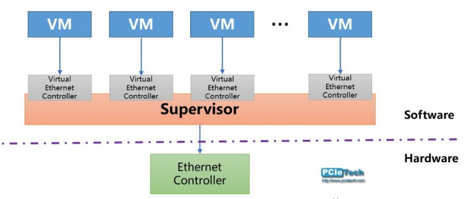
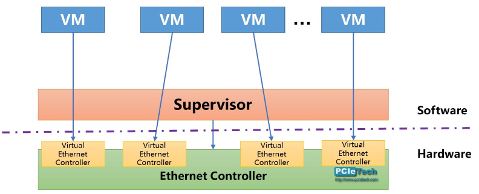
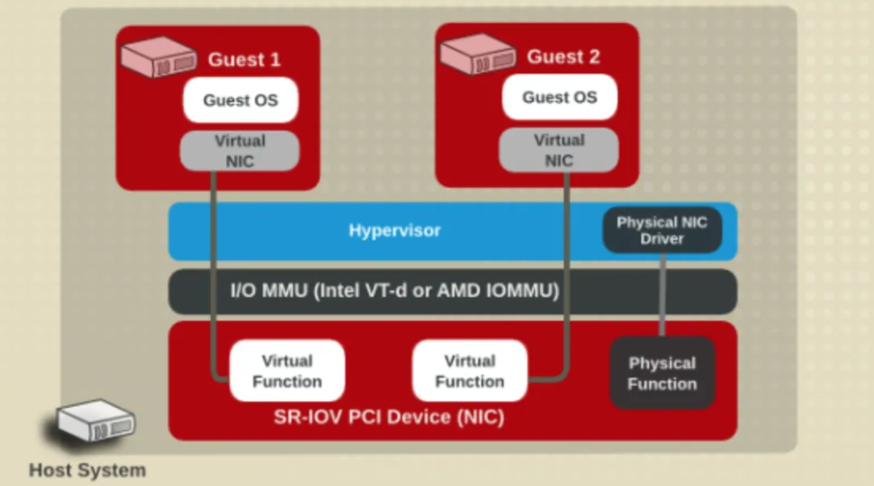
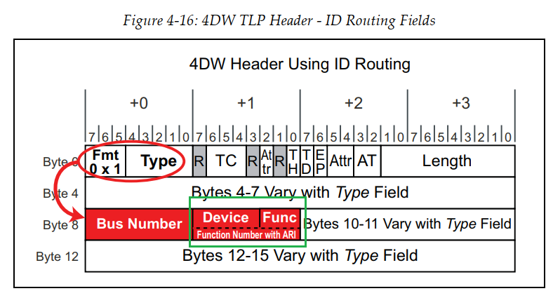
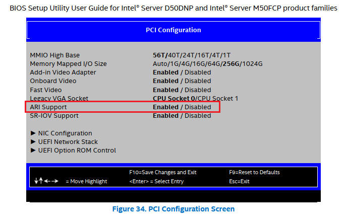
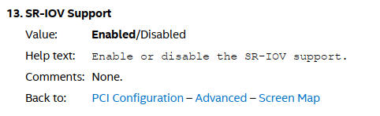
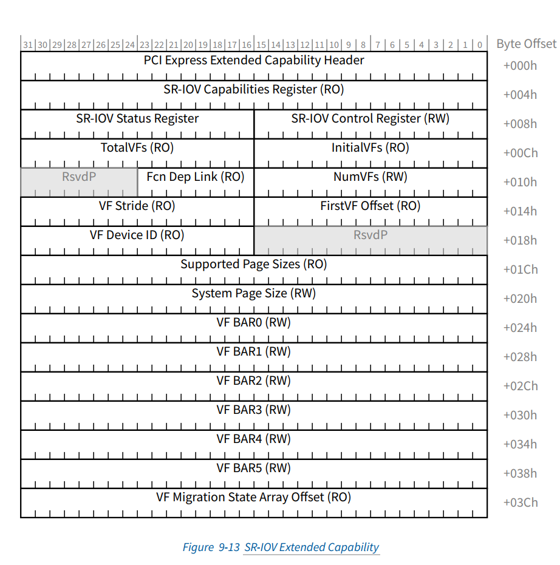
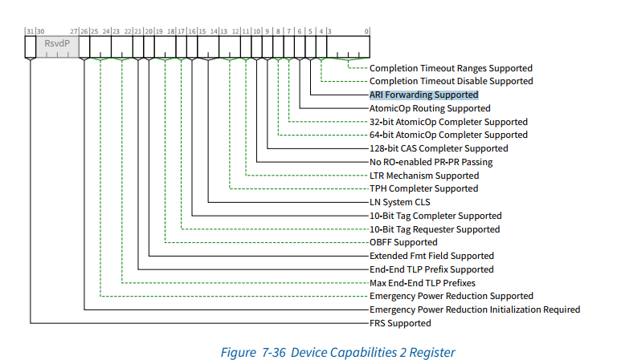

IO虚拟化和SR-IOV
IO 虚拟化技术有多种实现方式，SR-IOV 是一种常见的基于硬件的虚拟化技术， 除此以外还有MR-IOV技术。
基于软件的虚拟化，每一笔IO 都要经过转换，有性能瓶颈。

SR-IOV 硬件虚拟化，性能极大提升

SR-IOV基本原理
PCIe Gen5 Chapter 9
SR-IOV（Single-Root I/O Virtualization，单根 I/O 虚拟化）是 PCI-SIG 推出的一项标准，定义了一种 PCIe 设备虚拟化技术的标准机制，是 “虚拟通道” 的一种技术实现，用于将一个 PCIe 设备虚拟成多个 PCIe 设备，每个虚拟 PCIe 设备都具有自己的 PCIe 配置空间，如同物理 PCIe 设备一样为上层软件提供服务。
单个物理PCIe设备虚拟出多个虚拟PCIe设备。
SR-IOV 技术是一种基于物理硬件的虚拟化解决方案，可以提高物理 I/O 设备（常见的是网络适配器）的性能与可扩展性。SR-IOV 技术允许在虚拟机之间高效共享 PCIe 设备，由于 SR-IOV 技术是基于硬件实现的，可以使虚拟机获得与宿主机媲美的 I/O 性能。
SR-IOV 虚拟出来的通道分为两个类型：
- PF（Physical Function，物理功能）：管理 PCIe 设备在物理层面的通道功能，可以看作是一个完整的 PCIe 设备，包含了 SR-IOV 的功能结构，具有管理、配置 VF 的功能。
- VF（Virtual Function，虚拟功能）：是 PCIe 设备在虚拟层面的通道功能，即仅仅包含了 I/O 功能，VF 之间共享物理资源。VF 是一种裁剪版的 PCIe 设备，仅允许配置其自身的资源，虚拟机无法通过 VF 对 SR-IOV 网卡进行管理。所有的 VF 都是通过 PF 衍生而来，有些型号的 SR-IOV 网卡最多可以生成 256 个 VF。
简而言之，每个 VF 就像是物理网卡硬件资源的一个切片，而 PF 则是对所有物理网卡硬件资源的统筹者，包括管理众多 VF 可以协同工作。
PF 是全功能的 PCIe 功能，可以像其他任何 PCIe 设备一样进行发现、管理和处理。PF 拥有完全配置资源，可以用于配置或控制 PCIe 设备。
当 Hypervisor 识别出一个 VF 后，会通过 PF 来管理和配置 VF 的 I/O 资源。对于 Hypervisor 来说，VF 如同普通的 PCIe 网卡一般，安装相应驱动后就能够直接使用。假设一台服务器上安装了一个单端口 SR-IOV 网卡，这个端口生成了 4 个 VF，则 Hypervisor 就得到了四个以太网连接。
在 SR-IOV 的基础上，通过进一步利用 Intel VT-d 或 AMD IOMMU（Input/Output Memory Management Unit）技术，可以直接在虚拟机和 VF 之间做一对一的映射（PCI-Passthought）。ARM 使用 SMMU 技术。
在这个过程中，Hypervisor 的软件交换机被完全 Bypass 掉，从而实现低延时和近线速。同 VMware 的 VM DirectPath 相比，这种方式即实现了虚拟机对 VF 硬件资源的直接访问，又无需随着虚拟机数量的增加而增加物理网卡的数量。

带来的问题：SR-IOV 技术带来 Virtual Function 数目扩大，可能导致function 编号不够用了。
Routing ID 由BDF组成，8bit-5bit-3bit，对应256 Bus、32 Device、8 Function
8个function 对多个VM的SR-IOV不够用。依赖从PCIe Gen3 开始支持ARI机制。
所以在PCI枚举的时候不但要判断EP device是否支持SR-IOV，还要判断设备是否支持ARI。
ARI 技术
Alternative Routing-ID Interpretation 技术取消Device number 字段，合并到Function Number 字段。
Routing ID 改为 8 bit bus number + 8 bit function number
支持的bus数不变，但是function扩大到了256个。
为什么 Device Number 可以被占用呢？这是因为 Device Number 主要是用在共享总线架构中的，比如 PCI 总线。而在点对点架构中，比如像 PCIe 架构下，Device Number 通常是用不到的。

ARI Extended Capability ID 0x0E
PCIe Gen5 Chapter 6.13
这个功能也可以由BIOS setup 来配置。


https://blog.csdn.net/weixin_40357487/article/details/120533638
SRIOV BAR
PF的PCIe扩展配置空间 SR-IOV Extended Capability (0010h) 支持对SR-IOV功能进行配置

针对SR-IOV功能枚举阶段需要做的事情
ARI功能初始化：
ARI 准备： CreatePciIoDevice() 创建数据结构时候会判断当前device是否有ARI Extended Capability（ ID 0x0E）。如果支持这个功能，记录下来Capability 偏移值。同时判断上级是否支持ARI 转发，如果支持，将上游bridge的ARI功能enable起来。
读取（PCIe Capability（0x10） - Device Capabilities 2 Register (0x24) - ARI Forwarding Supported (0x20，bit5)）
写入（PCIe Capability（0x10） - Device Control 2 Register (0x28) - ARI Forwarding Enable (0x20，bit5)）

SR-IOV 初始化
捕获 SR-IOV Extended Capability：
CreatePciIoDevice() 创建数据结构时候会判断是否有SR-IOV Extended Capability（ID 0x10）。如果支持这个功能，记录下来Capability 偏移值。
enable 8-255 function 寻址：
设置 SRIOV Capability - control register - ARI Capable Hierarchy bit，默认为0, 1 enable 8-255 function 寻址。
Calculate SystemPageSize：
读取 SRIOV Capability - Supported Page Sizes (Offset 1Ch)
PFs are required to support 4-KB, 8-KB, 64-KB, 256-KB, 1-MB, and 4-MB page sizes. All other page sizes are optional.
将读出来的候选项，与PCD 指定的size相与，计算得到使用的size
写 SRIOV Capability - System Page Size (Offset 20h)
左移12位得到具体数值，比如，1<<=12 为4096，将这个值记录在PCI_IO_DEVICE中
计算为这个PF预留bus数：
一个SR-IOV device可能需要不止一条bus，比如一个device最多支持600个VF，使用256个VF，那么只需要一个bus；如果使用的VF大于256个，就需要两个bus来寻址，如果大于512，就需要三个bus
先计算最大的VF 的Routing ID:
LastVF = PFRid + FirstVFOffset + (PciIoDevice->InitialVFs - 1) * VFStride;
ReservedBusNum = (LastVF >>8) - Bus + 1
收集BAR 信息时候的处理：
GatherDeviceInfo() 中遍历VF bar
PciIovParseVfBar() 解析bar信息，和正常的bar解析类似，只是不支持IO space.
需要调整长度和对齐
每个bar的长度直接乘VF数目作为bar的长度。
如果对齐小于系统pagesize（一般为4K），按照系统pagesize对齐
ScanBus 时预留bus范围：
根据SR-IOV初始化时候计算的bus范围，按照最大范围VF数目进行预留bus资源。
分配资源时候创建对应的资源节点：
遍历bar, 按类型创建对应的资源节点 CreateVfResourceNode()
并插入到root bridge 整体的资源树中去
Program BAR 时调用专门的函数：
ProgramVfBar (Base, Node);